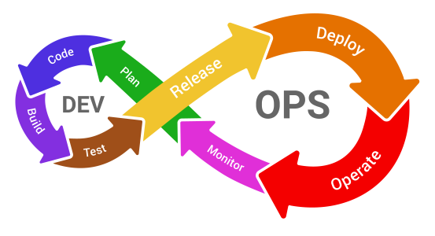

<!DOCTYPE html>
<html lang="en">
<head>
    <meta charset="utf-8" />
    <meta name="viewport" content="width=device-width, initial-scale=1.0, maximum-scale=1.0, user-scalable=no" />

    <title></title>
    <link rel="stylesheet" href="dist/reset.css">
    <link rel="stylesheet" href="dist/reveal.css" />
    <link rel="stylesheet" href="css/slides-extended.css" />
    <link rel="stylesheet" href="dist/theme/blood.css" id="theme" />
    <link rel="stylesheet" href="plugin/highlight/monokai.css" />
    <link rel="stylesheet" href="plugin/customcontrols/style.css">


    <script defer src="dist/fontawesome/all.min.js"></script>
    <script defer src="plugin/load-mathjax.js"></script>

    <script type="text/javascript">
        function pageInIframe() {
            return (window.location !== window.parent.location);
        }

        let forgetPop = true;
        function onPopState(event) {
            if(forgetPop){
                forgetPop = false;
            } else if( pageInIframe()) {
                parent.postMessage(event.target.location.href, "app://obsidian.md");
            }
        }
        window.onpopstate = onPopState;
        window.onmessage = event => {
            if(event.data == "reload"){
                window.document.location.reload();
            }
            forgetPop = true;
        }

        function fitElements() {
            const itemsToFit = document.getElementsByClassName('fitText');
            for (const item in itemsToFit) {
                if (Object.hasOwnProperty.call(itemsToFit, item)) {
                    const element = itemsToFit[item];
                    fitElement(element, 1, 1000);
                    element.classList.remove('fitText');
                }
            }
        }

        function fitElement(element, start, end) {

            let size = (end + start) / 2;
            element.style.fontSize = `${size}px`;

            if (Math.abs(start - end) < 1) {
                while (element.scrollHeight > element.offsetHeight) {
                    size--;
                    element.style.fontSize = `${size}px`;
                }
                return;
            }

            if (element.scrollHeight > element.offsetHeight) {
                fitElement(element, start, size);
            } else {
                fitElement(element, size, end);
            }
        }

        document.onreadystatechange = () => {
            fitElements();
            if (document.readyState === 'complete') {
                if (pageInIframe() && window.location.href.indexOf("?export") != -1){
                    parent.postMessage(event.target.location.href, "app://obsidian.md");
                }
                if (window.location.href.indexOf("print-pdf") != -1){
                    let stateCheck = setInterval(() => {
                        clearInterval(stateCheck);
                        window.print();
                    }, 250);
                }
            }
        };
    </script>
</head>

<body>
    <div class="reveal">
        <div class="slides"><section  data-markdown><script type="text/template"><!-- .slide: class="drop" data-transition="convex-out" template="" -->
<div class="" style="position: absolute; left: 0px; top: 0px; height: 700px; width: 960px; min-height: 700px; display: flex; flex-direction: column; align-items: center; justify-content: center" absolute="true">

#### Czy DevOps potrzebuje
### testów automatycznych?

<div class="" style="position: absolute; left: 25%; top: 80%; height: 20%; width: 50%; display: flex; flex-direction: column; align-items: center; justify-content: center" >


Maciej 'maQ' Kusz<!-- .element: style="font-size: 50%" -->
</div>
</div></script></section><section  data-markdown><script type="text/template"><!-- .slide: class="drop" data-transition="convex" template="" -->
<div class="" style="position: absolute; left: 0px; top: 0px; height: 700px; width: 960px; min-height: 700px; display: flex; flex-direction: column; align-items: center; justify-content: center" absolute="true">

- Tester od 17 lat (w tym 14 automatyzacji)
- &shy;<!-- .element: class="fragment" data-fragment-index="1" -->Testowanie UI, API, IoT oraz performance
- &shy;<!-- .element: class="fragment" data-fragment-index="2" -->Test lead, architekt, trener i mentor
- &shy;<!-- .element: class="fragment" data-fragment-index="3" -->Prelegent i współorganizator meetupów i konferencji
- &shy;<!-- .element: class="fragment" data-fragment-index="4" -->🐞[testerembyc.pl](https://testerembyc.pl/) oraz [mkdocs-publisher](https://mkdocs-publisher.github.io/)
- &shy;<!-- .element: class="fragment" data-fragment-index="5" -->DIY oraz druk 3D
</div></script></section><section  data-markdown><script type="text/template"><!-- .slide: class="drop" data-transition="convex" template="" -->
<div class="" style="position: absolute; left: 0px; top: 0px; height: 700px; width: 960px; min-height: 700px; display: flex; flex-direction: column; align-items: center; justify-content: center" absolute="true">

<iframe src="https://wall.sli.do/event/woUvwhPkNKk4h9KvSSK2pU?section=27fe3eee-08fc-413f-b1e6-999cf2a89786" height="100%" width="100%" frameBorder="0" style="min-height: 560px;" allow="clipboard-write" title="Slido"></iframe>
</div></script></section><section  data-markdown><script type="text/template"><!-- .slide: class="drop" data-transition="convex" template="" -->
<div class="" style="position: absolute; left: 0px; top: 0px; height: 700px; width: 960px; min-height: 700px; display: flex; flex-direction: column; align-items: center; justify-content: center" absolute="true">

#### Cykl Demminga


</div>

<aside class="notes"><p>metoda zarządzania jakością i ciągłego doskonalenia, składająca się z etapów PDCA, które mają na celu systematyczną poprawę procesów i produktów</p>
</aside></script></section><section  data-markdown><script type="text/template"><!-- .slide: class="drop" data-transition="convex-in" template="" -->
<div class="" style="position: absolute; left: 0px; top: 0px; height: 700px; width: 960px; min-height: 700px; display: flex; flex-direction: column; align-items: center; justify-content: center" absolute="true">

#### Dev

</div></script></section><section  data-markdown><script type="text/template"><!-- .slide: class="drop" template="" -->
<div class="" style="position: absolute; left: 0px; top: 0px; height: 700px; width: 960px; min-height: 700px; display: flex; flex-direction: column; align-items: center; justify-content: center" absolute="true">

#### Ops


</div></script></section><section  data-markdown><script type="text/template"><!-- .slide: class="drop" data-transition="convex-out" template="" -->
<div class="" style="position: absolute; left: 0px; top: 0px; height: 700px; width: 960px; min-height: 700px; display: flex; flex-direction: column; align-items: center; justify-content: center" absolute="true">

#### DevOps


</div>

<aside class="notes"><p>Motodyka łącząca development (Dev) i operations (Ops) w celu skrócenia cyklu tworzenia oprogramowania, zwiększenia częstotliwości i niezawodności wdrożeń oraz podniesienia jakości produktów.</p>
</aside></script></section><section  data-markdown><script type="text/template"><!-- .slide: class="drop" data-transition="convex-in" template="" -->
<div class="" style="position: absolute; left: 0px; top: 0px; height: 700px; width: 960px; min-height: 700px; display: flex; flex-direction: column; align-items: center; justify-content: center" absolute="true">

<div class="" style="position: absolute; left: 5%; top: 0%; height: 35%; width: 90%; display: flex; flex-direction: column; align-items: center; justify-content: center" >


</div>

<div class="fragment" style="font-size: 0.825em; position: absolute; left: 5%; top: 17.5%; height: 65%; width: 90%; display: flex; flex-direction: column; align-items: center; justify-content: space-evenly" align="justify" data-fragment-index="1">

Motodyka łącząca development (Dev) i operations (Ops) w celu skrócenia cyklu tworzenia oprogramowania, zwiększenia częstotliwości i niezawodności wdrożeń oraz podniesienia jakości produktów.
</div>
</div></script></section><section  data-markdown><script type="text/template"><!-- .slide: class="drop" template="" -->
<div class="" style="position: absolute; left: 0px; top: 0px; height: 700px; width: 960px; min-height: 700px; display: flex; flex-direction: column; align-items: center; justify-content: center" absolute="true">

<div class="" style="position: absolute; left: 5%; top: 0%; height: 35%; width: 90%; display: flex; flex-direction: column; align-items: center; justify-content: center" >


</div>

<div class="" style="font-size: 0.825em; position: absolute; left: 5%; top: 17.5%; height: 65%; width: 90%; display: flex; flex-direction: column; align-items: center; justify-content: space-evenly" align="justify">

- &shy;<!-- .element: class="fragment" data-fragment-index="1" -->Testowanie statyczne - analiza wymagań, analiza projektu, np. architektury
- &shy;<!-- .element: class="fragment" data-fragment-index="2" -->Test Driven Development (TDD)
- &shy;<!-- .element: class="fragment" data-fragment-index="3" -->Behaviour Driven Development (BDD)
- &shy;<!-- .element: class="fragment" data-fragment-index="4" -->Analiza ryzyka i planowanie testów
</div>
</div></script></section><section  data-markdown><script type="text/template"><!-- .slide: class="drop" template="" -->
<div class="" style="position: absolute; left: 0px; top: 0px; height: 700px; width: 960px; min-height: 700px; display: flex; flex-direction: column; align-items: center; justify-content: center" absolute="true">

<div class="" style="position: absolute; left: 5%; top: 0%; height: 35%; width: 90%; display: flex; flex-direction: column; align-items: center; justify-content: center" >


</div>

<div class="" style="font-size: 0.825em; position: absolute; left: 5%; top: 17.5%; height: 65%; width: 90%; display: flex; flex-direction: column; align-items: center; justify-content: space-evenly" align="justify">

- &shy;<!-- .element: class="fragment" data-fragment-index="1" -->Linting i type checking
- &shy;<!-- .element: class="fragment" data-fragment-index="2" -->Formatowanie kodu
- &shy;<!-- .element: class="fragment" data-fragment-index="3" -->Debugging
- &shy;<!-- .element: class="fragment" data-fragment-index="4" -->Kompilacja
- &shy;<!-- .element: class="fragment" data-fragment-index="5" -->Testy jednostkowe
</div>
</div></script></section><section  data-markdown><script type="text/template"><!-- .slide: class="drop" template="" -->
<div class="" style="position: absolute; left: 0px; top: 0px; height: 700px; width: 960px; min-height: 700px; display: flex; flex-direction: column; align-items: center; justify-content: center" absolute="true">

<div class="" style="position: absolute; left: 5%; top: 0%; height: 35%; width: 90%; display: flex; flex-direction: column; align-items: center; justify-content: center" >


</div>

<div class="" style="font-size: 0.825em; position: absolute; left: 5%; top: 17.5%; height: 65%; width: 90%; display: flex; flex-direction: column; align-items: center; justify-content: space-evenly" align="justify">

- &shy;<!-- .element: class="fragment" data-fragment-index="1" -->UI i API
- &shy;<!-- .element: class="fragment" data-fragment-index="2" -->Integracji
- &shy;<!-- .element: class="fragment" data-fragment-index="3" -->Wydajności
- &shy;<!-- .element: class="fragment" data-fragment-index="4" -->Dostępności i użyteczności
- &shy;<!-- .element: class="fragment" data-fragment-index="5" -->Bezpieczeństwa
- &shy;<!-- .element: class="fragment" data-fragment-index="6" -->Eksploracja
- &shy;<!-- .element: class="fragment" data-fragment-index="7" -->Regresja wizualna
</div>
</div></script></section><section  data-markdown><script type="text/template"><!-- .slide: class="drop" template="" -->
<div class="" style="position: absolute; left: 0px; top: 0px; height: 700px; width: 960px; min-height: 700px; display: flex; flex-direction: column; align-items: center; justify-content: center" absolute="true">

<div class="" style="position: absolute; left: 5%; top: 0%; height: 35%; width: 90%; display: flex; flex-direction: column; align-items: center; justify-content: center" >


</div>

<div class="" style="font-size: 0.825em; position: absolute; left: 25%; top: 0%; height: 100%; width: 50%; display: flex; flex-direction: column; align-items: center; justify-content: space-evenly" ddrag="90 65" align="justify">

- &shy;<!-- .element: class="fragment" data-fragment-index="1" -->Konfiguracja
- &shy;<!-- .element: class="fragment" data-fragment-index="2" -->Smoke/sanity
- &shy;<!-- .element: class="fragment" data-fragment-index="3" -->A/B
</div>
</div></script></section><section  data-markdown><script type="text/template"><!-- .slide: class="drop" template="" -->
<div class="" style="position: absolute; left: 0px; top: 0px; height: 700px; width: 960px; min-height: 700px; display: flex; flex-direction: column; align-items: center; justify-content: center" absolute="true">

<div class="" style="position: absolute; left: 5%; top: 0%; height: 35%; width: 90%; display: flex; flex-direction: column; align-items: center; justify-content: center" >


</div>

<div class="" style="font-size: 0.625em; padding: 20px; box-sizing: border-box; position: absolute; left: 5%; top: 20%; height: 80%; width: 90%; display: flex; flex-direction: column; align-items: flex-start; justify-content: space-evenly" align="left">


- 📺 infrastruktury - healthcheck, zasoby (CPU, RAM, HDD, sieć, itp)<br><!-- .element: class="fragment" -->
_🛠️ DataDog, AppDynamics, Zabbix_<br></br> <!-- .element: class="fragment" -->
- 📺 wydajności (APM) - czas odpowiedzi i error rate<br><!-- .element: class="fragment" -->
_🛠️ DataDog, AppDynamics, NewRelic, Dynatrace_ <br></br><!-- .element: class="fragment" -->
- 📺 kosztów - odchyłki w kosztach zasobów (chmury)<br><!-- .element: class="fragment" -->
_🛠️ DataDog, nOps_ <br></br><!-- .element: class="fragment" -->

</div>
</div>

<aside class="notes"><p>APM - Application Performance Management</p>
</aside></script></section><section  data-markdown><script type="text/template"><!-- .slide: class="drop" template="" -->
<div class="" style="position: absolute; left: 0px; top: 0px; height: 700px; width: 960px; min-height: 700px; display: flex; flex-direction: column; align-items: center; justify-content: center" absolute="true">

<div class="" style="position: absolute; left: 5%; top: 0%; height: 35%; width: 90%; display: flex; flex-direction: column; align-items: center; justify-content: center" >


</div>

<div class="" style="font-size: 0.625em; padding: 20px; box-sizing: border-box; position: absolute; left: 5%; top: 20%; height: 80%; width: 90%; display: flex; flex-direction: column; align-items: flex-start; justify-content: space-evenly" align="left">


- agregacja logów - wyszukiwanie błędów i anomalii<br><!-- .element: class="fragment" -->
_🛠️ Elastic (ELK) Stack. Splunk, Dynatrace_ <br></br><!-- .element: class="fragment" -->
- podróż użytkownika - trackowanie akcji oraz wykrywanie "pain points"<br><!-- .element: class="fragment" -->
_🛠️ DataDog, Sentry, NewRelic_ <br></br><!-- .element: class="fragment" -->
- zarządzanie incydentami - logowanie, kategoryzacja, inwestygacja, rozwiązanie, zamknięcie, post mortem<br><!-- .element: class="fragment" -->
_🛠️ PagerDuty, BetterStack_ <br></br><!-- .element: class="fragment" -->

</div>
</div>

<aside class="notes"><p>ELK - Elasticsearch, Logstash, Kibana</p>
</aside></script></section><section  data-markdown><script type="text/template"><!-- .slide: class="drop" template="" -->
<div class="" style="position: absolute; left: 0px; top: 0px; height: 700px; width: 960px; min-height: 700px; display: flex; flex-direction: column; align-items: center; justify-content: center" absolute="true">

<div class="" style="position: absolute; left: 5%; top: 0%; height: 35%; width: 90%; display: flex; flex-direction: column; align-items: center; justify-content: center" >


</div>

<div class="" style="font-size: 0.625em; padding: 20px; box-sizing: border-box; position: absolute; left: 5%; top: -14%; height: 107%; width: 90%; display: flex; flex-direction: column; align-items: flex-start; justify-content: space-evenly" align="left">

#### Scenariusze testów automatycznych:
</div>

<div class="" style="font-size: 0.625em; padding: 20px; box-sizing: border-box; position: absolute; left: 5%; top: 20%; height: 80%; width: 90%; display: flex; flex-direction: column; align-items: flex-start; justify-content: space-evenly" align="left">

- &shy;<!-- .element: class="fragment" data-fragment-index="1" -->smoke testy
- &shy;<!-- .element: class="fragment" data-fragment-index="2" -->migracji danych
- &shy;<!-- .element: class="fragment" data-fragment-index="3" -->bezpieczeństwa
- &shy;<!-- .element: class="fragment" data-fragment-index="4" -->regresja wizualna
- &shy;<!-- .element: class="fragment" data-fragment-index="5" -->core web vitals
- &shy;<!-- .element: class="fragment" data-fragment-index="6" -->eksploracyjne i manualne
</div>
</div></script></section><section  data-markdown><script type="text/template"><!-- .slide: class="drop" template="" -->
<div class="" style="position: absolute; left: 0px; top: 0px; height: 700px; width: 960px; min-height: 700px; display: flex; flex-direction: column; align-items: center; justify-content: center" absolute="true">

<div class="" style="position: absolute; left: 5%; top: 0%; height: 35%; width: 90%; display: flex; flex-direction: column; align-items: center; justify-content: center" >


</div>

<div class="" style="font-size: 0.625em; padding: 20px; box-sizing: border-box; position: absolute; left: 5%; top: -14%; height: 107%; width: 90%; display: flex; flex-direction: column; align-items: flex-start; justify-content: space-evenly" align="left">

#### Cechy scenariuszy testów
</div>

<div class="" style="font-size: 0.625em; padding: 20px; box-sizing: border-box; position: absolute; left: 5%; top: 20%; height: 80%; width: 90%; display: flex; flex-direction: column; align-items: flex-start; justify-content: space-evenly" align="left">

- &shy;<!-- .element: class="fragment" data-fragment-index="1" -->stabilne
- &shy;<!-- .element: class="fragment" data-fragment-index="2" -->proste
- &shy;<!-- .element: class="fragment" data-fragment-index="3" -->szybkie
- &shy;<!-- .element: class="fragment" data-fragment-index="4" -->ważne funkcjonalności lub systemy
- &shy;<!-- .element: class="fragment" data-fragment-index="5" -->(przeważnie) happy path
</div>
</div></script></section><section  data-markdown><script type="text/template"><!-- .slide: class="drop" data-transition="convex-out" template="" -->
<div class="" style="position: absolute; left: 0px; top: 0px; height: 700px; width: 960px; min-height: 700px; display: flex; flex-direction: column; align-items: center; justify-content: center" absolute="true">

<div class="" style="position: absolute; left: 5%; top: 0%; height: 35%; width: 90%; display: flex; flex-direction: column; align-items: center; justify-content: center" >


</div>

<div class="" style="font-size: 0.625em; padding: 20px; box-sizing: border-box; position: absolute; left: 5%; top: -14%; height: 107%; width: 90%; display: flex; flex-direction: column; align-items: flex-start; justify-content: space-evenly" align="left">

#### Quality gates:
</div>

<div class="" style="font-size: 0.625em; padding: 20px; box-sizing: border-box; position: absolute; left: 5%; top: 20%; height: 80%; width: 90%; display: flex; flex-direction: column; align-items: flex-start; justify-content: space-evenly" align="left">

- &shy;<!-- .element: class="fragment" data-fragment-index="1" -->jakość kodu
- &shy;<!-- .element: class="fragment" data-fragment-index="2" -->testy
- &shy;<!-- .element: class="fragment" data-fragment-index="3" -->bezpieczeństwo
- &shy;<!-- .element: class="fragment" data-fragment-index="4" -->proces budowania
- &shy;<!-- .element: class="fragment" data-fragment-index="5" -->konfiguracja
- &shy;<!-- .element: class="fragment" data-fragment-index="6" -->dokumentacja
</div>
</div>

<aside class="notes"><ul>
<li>manualnie</li>
<li>pre commit/push (np. husky)</li>
<li>CI/CD (np. GitHub, Jenkins)</li>
<li>&quot;na produkcji&quot; (np. DataDog)</li>
</ul>
</aside></script></section><section  data-markdown><script type="text/template"><!-- .slide: class="drop" data-transition="convex" template="" -->
<div class="" style="position: absolute; left: 0px; top: 0px; height: 700px; width: 960px; min-height: 700px; display: flex; flex-direction: column; align-items: center; justify-content: center" absolute="true">


</div></script></section><section  data-markdown><script type="text/template"><!-- .slide: class="drop" data-transition="convex" template="" -->
<div class="" style="position: absolute; left: 0px; top: 0px; height: 700px; width: 960px; min-height: 700px; display: flex; flex-direction: column; align-items: center; justify-content: center" absolute="true">


</div></script></section><section  data-markdown><script type="text/template"><!-- .slide: class="drop" data-transition="convex" template="" -->
<div class="" style="position: absolute; left: 0px; top: 0px; height: 700px; width: 960px; min-height: 700px; display: flex; flex-direction: column; align-items: center; justify-content: center" absolute="true">


</div></script></section><section  data-markdown><script type="text/template"><!-- .slide: class="drop" data-transition="convex" template="" -->
<div class="" style="position: absolute; left: 0px; top: 0px; height: 700px; width: 960px; min-height: 700px; display: flex; flex-direction: column; align-items: center; justify-content: center" absolute="true">


</div></script></section><section  data-markdown><script type="text/template"><!-- .slide: class="drop" data-transition="convex" template="" -->
<div class="" style="position: absolute; left: 0px; top: 0px; height: 700px; width: 960px; min-height: 700px; display: flex; flex-direction: column; align-items: center; justify-content: center" absolute="true">


</div></script></section><section  data-markdown><script type="text/template"><!-- .slide: class="drop" data-transition="convex" template="" -->
<div class="" style="position: absolute; left: 0px; top: 0px; height: 700px; width: 960px; min-height: 700px; display: flex; flex-direction: column; align-items: center; justify-content: center" absolute="true">


</div></script></section><section  data-markdown><script type="text/template"><!-- .slide: class="drop" data-transition="convex" template="" -->
<div class="" style="position: absolute; left: 0px; top: 0px; height: 700px; width: 960px; min-height: 700px; display: flex; flex-direction: column; align-items: center; justify-content: center" absolute="true">

<div class="" style="position: absolute; left: 5%; top: 0%; height: 40%; width: 90%; display: flex; flex-direction: column; align-items: center; justify-content: center" >

#### Jak się uczyć?
</div>

<div class="" style="font-size: 1em; padding: 20px; box-sizing: border-box; position: absolute; left: 25%; top: 25%; height: 50%; width: 50%; display: flex; flex-direction: column; align-items: flex-start; justify-content: space-evenly" align="left">

- &shy;<!-- .element: class="fragment" data-fragment-index="1" -->docker
- &shy;<!-- .element: class="fragment" data-fragment-index="2" -->localstack
- &shy;<!-- .element: class="fragment" data-fragment-index="3" -->proxmox
- &shy;<!-- .element: class="fragment" data-fragment-index="4" -->GitHub Actions
- &shy;<!-- .element: class="fragment" data-fragment-index="5" -->chmura (AWS)
</div>
</div></script></section><section  data-markdown><script type="text/template"><!-- .slide: class="drop" data-transition="convex" template="" -->
<div class="" style="position: absolute; left: 0px; top: 0px; height: 700px; width: 960px; min-height: 700px; display: flex; flex-direction: column; align-items: center; justify-content: center" absolute="true">

## Pytania?

<div class="" style="position: absolute; left: 25%; top: 90%; height: 10%; width: 50%; display: flex; flex-direction: column; align-items: center; justify-content: center" >


</div>
</div></script></section><section  data-markdown><script type="text/template"><!-- .slide: class="drop" data-transition="convex" template="" -->
<div class="" style="position: absolute; left: 0px; top: 0px; height: 700px; width: 960px; min-height: 700px; display: flex; flex-direction: column; align-items: center; justify-content: center" absolute="true">

<div class="" style="position: absolute; left: 0%; top: 20%; height: 60%; width: 50%; display: flex; flex-direction: column; align-items: center; justify-content: center" >

#### Kontakt


</div>

<div class="" style="position: absolute; left: 50%; top: 20%; height: 60%; width: 50%; display: flex; flex-direction: column; align-items: center; justify-content: center" >

#### Prezentacja


</div>

<div class="" style="position: absolute; left: 25%; top: 90%; height: 10%; width: 50%; display: flex; flex-direction: column; align-items: center; justify-content: center" >


</div>
</div></script></section><section  data-markdown><script type="text/template"><!-- .slide: class="drop" data-transition="convex" template="" -->
<div class="" style="position: absolute; left: 0px; top: 0px; height: 700px; width: 960px; min-height: 700px; display: flex; flex-direction: column; align-items: center; justify-content: center" absolute="true">

## Koniec

<div class="" style="position: absolute; left: 25%; top: 90%; height: 10%; width: 50%; display: flex; flex-direction: column; align-items: center; justify-content: center" >


</div>
</div></script></section></div>
    </div>

    <script src="dist/reveal.js"></script>
    <script src="plugin/notes/notes.js"></script>
    <script src="plugin/markdown/markdown.js"></script>
    <script src="plugin/highlight/highlight.js"></script>

    <script src="plugin/zoom/zoom.js"></script>
    <script src="plugin/math/math.js"></script>
    <script src="plugin/mermaid/mermaid.js"></script>
    <script src="plugin/chart/chart.umd.js"></script>
    <script src="plugin/chart/plugin.js"></script>
    <script src="plugin/customcontrols/plugin.js"></script>

    <script>
        function extend() {
            const target = {};
            for (let i = 0; i < arguments.length; i++) {
                const source = arguments[i];
                for (const key in source) {
                    if (source.hasOwnProperty(key)) {
                        target[key] = source[key];
                    }
                }
            }
            return target;
        }

        function isLight(color) {
            let hex = color.replace('#', '');

            // convert #fff => #ffffff
            if (hex.length == 3) {
                hex = `${hex[0]}${hex[0]}${hex[1]}${hex[1]}${hex[2]}${hex[2]}`;
            }

            const c_r = parseInt(hex.substr(0, 2), 16);
            const c_g = parseInt(hex.substr(2, 2), 16);
            const c_b = parseInt(hex.substr(4, 2), 16);
            const brightness = ((c_r * 299) + (c_g * 587) + (c_b * 114)) / 1000;
            return brightness > 155;
        }

        const bgColor = getComputedStyle(document.documentElement).getPropertyValue('--r-background-color').trim();

        if (isLight(bgColor)) {
            document.body.classList.add('has-light-background');
        } else {
            document.body.classList.add('has-dark-background');
        }

        // default options to init reveal.js
        const defaultOptions = {
            controls: true,
            progress: true,
            history: true,
            center: true,
            transition: 'default', // none/fade/slide/convex/concave/zoom
            plugins: [
                RevealMarkdown,
                RevealHighlight,
                RevealZoom,
                RevealNotes,
                RevealMath.MathJax3,
                RevealMermaid,
                RevealChart,
                RevealCustomControls,
            ],
            allottedTime: 120 * 1000,
            mathjax3: {
                mathjax: 'plugin/math/mathjax/tex-chtml-full.js',
            },
            markdown: {
                gfm: true,
                mangle: false,
                pedantic: false,
                smartLists: false,
                smartypants: false,
            },
            mermaid: {
                theme: isLight(bgColor) ? 'default' : 'dark',
            },
            customcontrols: {
                controls: [
                ]
            },
        };

        if ( pageInIframe() ) {
            defaultOptions.scrollActivationWidth = 5;
        }

        // options from URL query string
        const queryOptions = Reveal().getQueryHash() || {};

        const options = extend(defaultOptions, {"controls":true,"progress":true,"slideNumber":true,"center":true,"transition":"none","transitionSpeed":"default","width":960,"height":700,"margin":0.04,"minScale":0.5,"maxScale":3}, queryOptions);
    </script>

    <script>
      Reveal.initialize(options);
    </script>
    <!-- created with Slides Extended reveal.html template -->
</body>
</html>
